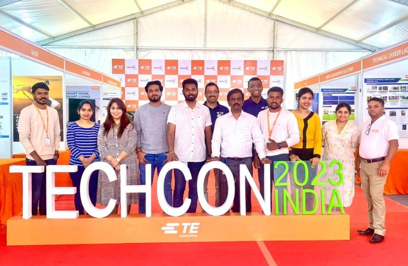

History
TechCon was founded in 2010 with the vision of bringing together technology enthusiasts, professionals, and innovators from around the world. Over the years, it has grown into one of the most anticipated tech events, offering a platform for sharing groundbreaking ideas and fostering collaboration.

Mission
Our mission is to drive technological innovation and collaboration by creating a space where ideas can be exchanged freely, and the latest advancements can be showcased. We aim to inspire the next generation of tech leaders and create a community that supports continuous learning and growth.
Past Speakers
TechCon has been honored to host a variety of distinguished speakers over the years. Here are a few notable ones:
John Doe - A pioneering figure in AI research, John has contributed significantly to the development of machine learning algorithms and has inspired countless individuals through his work.
Jane Smith - As a cybersecurity expert, Jane has been at the forefront of developing advanced security protocols that protect data in an increasingly digital world.
Mike Johnson - Known for his innovations in blockchain technology, Mike has played a crucial role in the rise of decentralized finance and has been a vocal advocate for its potential to revolutionize various industries.